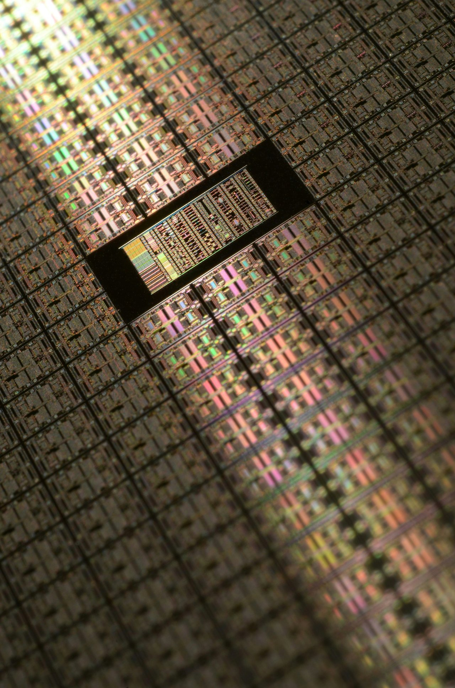
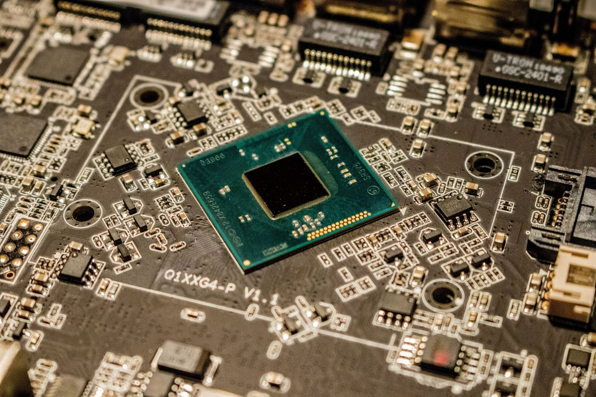
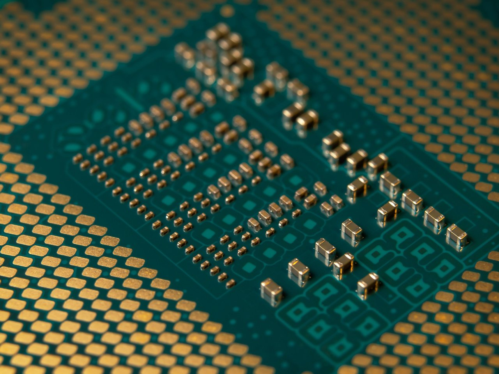
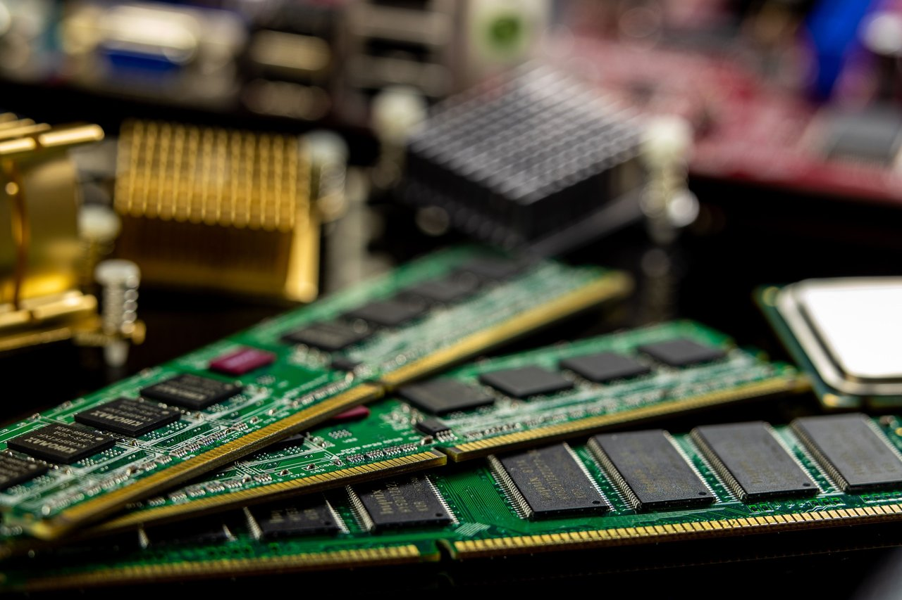
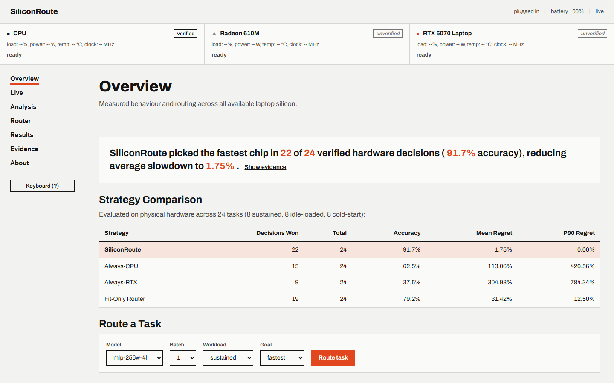
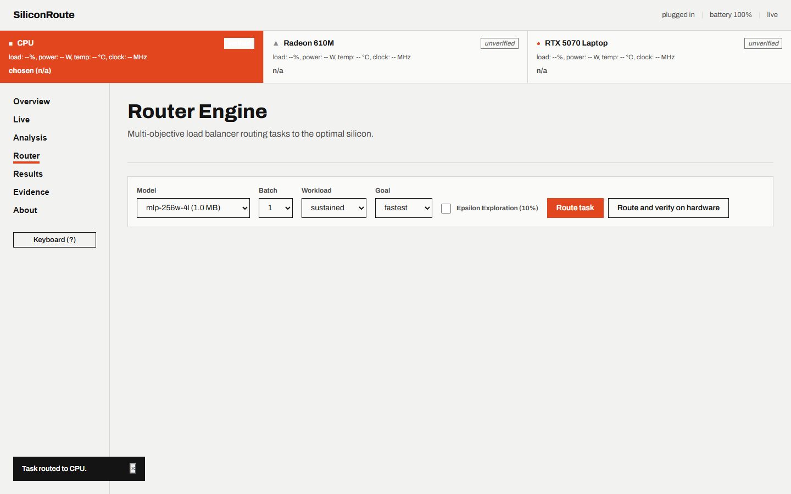

Laptops now carry several kinds of processors. Software should use the right one for each task, and prove it.
Measure the real hardware.
Benchmark every chip under real thermal and power constraints before claiming throughput.
Explain every decision.
Provide the mathematical model, bus penalty calculations, and verified regret for every route.
Publish the evidence.
Every number is verified against a frozen SQLite database with reproducible provenance.


The problem
Default operating system execution policies assume discrete GPUs are always faster. Real silicon physics prove otherwise.
CPU is faster on small batch-1 models because PCIe bus dispatch and kernel launch overhead exceed computation time.
Discrete GPU dominates once model compute density outgrows CPU cache and parallel execution units engage.
A cold discrete GPU invocation incurs massive latency overhead compared to sustained execution due to PCIe bus power state transitions.
Figure 1. Empirical latency contrast on test workstation (AMD Ryzen 9 8940HX, AMD Radeon 610M, NVIDIA RTX 5070 Laptop GPU).
The decision
SiliconRoute evaluates candidate execution times across all processors and routes each task to the optimal device.
SiliconRoute routes MLP-256 batch 1 to CPU: cache residency yields 8.4x lower latency than discrete GPU.
Figure 2. Execution time across available chips for the selected workload.
How it works
SiliconRoute bridges the gap between hardware telemetry and runtime model execution in four deterministic phases.
Micro-benchmarking
Runs latency and power sampling across CPU, iGPU, and dGPU, tracking warm and cold-start transitions.
Scaling fit
Fits non-negative least squares models per chip to separate fixed dispatch overhead from compute and memory bandwidth terms.
Workload routing
Scores models under selectable objectives: Fastest, Battery, Cool, or Balanced, factoring in accelerator wake penalties.
Regret verification
Executes the model on physical hardware to verify predicted vs actual time, computing decision regret in real time.
Evaluation results
SiliconRoute achieved accuracy with mean regret across verified routing decisions.
| Strategy | Wins | Accuracy | Mean regret | P90 regret | Max regret |
|---|---|---|---|---|---|
| SiliconRoute (learned) | /24 | ||||
| Always CPU | /24 | 156.4% | 541.2% | ||
| Always RTX 5070 | /24 | 62.1% | 184.3% | ||
| Fit only (unadjusted) | 19/24 | 79.2% | 6.42% | 14.1% | 28.4% |
Figure 3. Evaluation on previously profiled configurations, one laptop.

Empirical findings
Hardware benchmarking revealed critical silicon dynamics that conventional static runtimes overlook.
1. CPU cache crossover
Small models fit entirely within CPU L3 cache. For MLP-256 batch 1, CPU achieves 0.017 ms compared to 0.142 ms on RTX 5070 (8.4x speedup).
Hypothesis: Working set residence in unified cache eliminates PCIe dispatch latency.

2. DirectML convolution anomaly
Conv-96 exhibits a sharp 5.6x slowdown from batch 4 (2.4 ms) to batch 8 (13.5 ms) on integrated graphics.
Hypothesis: Sub-optimal shader tiling triggers excessive local memory spill on integrated pipelines.
3. Discrete GPU wake penalty
When the discrete GPU rests in power state P8, a cold invocation requires ( overhead over sustained execution).
Hypothesis: PCIe link re-training and driver context initialization dominate sparse inferences.
4. Hardware identity verification
DirectML adapter indices change nondeterministically across reboots. SiliconRoute implements an active blink probe to guarantee execution on intended silicon.
Snapdragon X2 Elite
Status: In progress.
Measuring execution latency, thermal throttling, and unified memory power efficiency under sustained and cold-start workloads via ONNX Runtime DirectML and QNN.
Snapdragon results not yet recorded in final published evaluation.
Live telemetry dashboard
The live dashboard shows telemetry, the chip models and the router, and runs on your own laptop.


Reproduce results
Every measurement and figure is fully reproducible from source using the frozen SQLite database.
Step 1: Clone the repository
git clone https://github.com/tanmaykumar-dev/siliconroute.git cd siliconroute
Step 2: Start the application
start.bat
Step 3: Run reproduction script
python scripts/reproduce.py
Step 4: Execute test suite
python -m pytest -q
Frozen database checksum
98542cffb7264eee537d218e1863ccbbc174495e0bf13eb244ee22cd6f034cf5
How this was built
SiliconRoute was built by Tanmay as an independent research project investigating heterogeneous computing architectures on consumer laptops.
- Built with assistance from Google Antigravity paired with disciplined engineering verification.
- No benchmark measurements were synthesized, estimated, or simulated.
- Hardware models are fitted via non-negative least squares against physical executions.